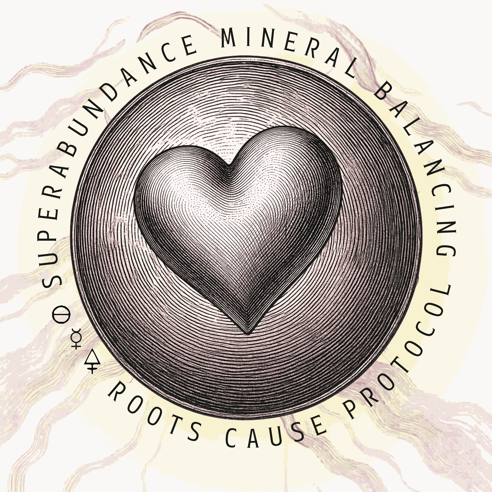
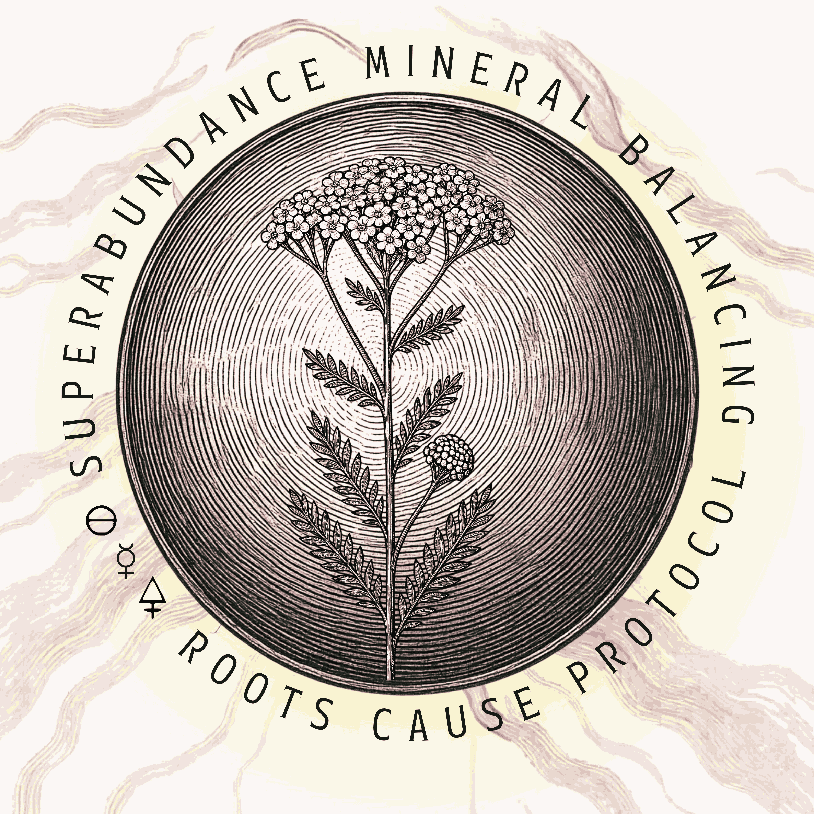

Foundational Mineral Balance
1:1 Heart-to-Heart Coaching Program
True health begins with REAL NOURISHMENT. At the cellular level we focuses on energy metabolism through advanced mineral analysis & remineralization with individualized protocols. This uniquely & personally crafted guidance to well-being is designed to uncover your underlying imbalances that may be affecting your energy, emotional intelligence, metabolism, and overall vitality.
Hair Tissue Mineral Analysis (HTMA) provides an initial & non-invasive way to assess mineral- and stress patterns your body at the cellular level. This gives us valuable insights into your overall metabolism, thyroid function, adrenal function, stages of emotional & lifestyle stress, electric capacity of the body, as well as likelihood of heavy metal toxicity & more. These insights allow us to move beyond symptom-based approaches and instead address foundational imbalances by contextualizing manifested root causes within your body.
Your personalized program may include:
• Detailed Hair Tissue Mineral Analysis (HTMA) testing and interpretation
• Customized nutritional, mineral and supplement recommendations tailored to your unique biochemistry
• 3-5 Months of personal guidance that is aligned with foundational mineral-balancing & root cause frameworks
• Ongoing 1:1 integration support, check-ins, and protocol adjustments as your body responds and evolves
• Detailed Full Monty Blood/Iron Panel interpretation,- This is a comprehensive review of existing blood work to provide a more complete picture of the mineral balance within your body
This approach is ideal for those seeking a structured, data-informed path to restoring balance and optimizing long-term health.
Learn more about Mineral Balance
Holistic Herbal Consultation
This part of the offering provides a unique & personalized botanical protocol to your foundational mineral balancing journey,- rooted in both traditional knowledge and modern understanding. Emanuel Elischa is certified in the Evolutionary Herbalism® Paradigm, after finishing 3 years of education & mentorship in various programs with their Institute. His continuous research through the Phoenix Aurelius Research Academy, as well as through the Lumina Institute with clinical herbalist, director of the Canadian Council of Herbalist Associations & practicing laboratory alchemist Daniel Wiseman, anchors his cosmology & herbal practice deep in an ever-evolving, eclectic art & fascination, drawing from the global systems of Ayurveda, Traditional Chinese Medicine, Western Herbalism, Plant Spirit Medicine and Spagyria/Alchemy. Through his own clinical practice & experience, he finds that the marvelous magic & efficiency of botanical medicine does absolutely manifest a fantastic adjunct to a foundational mineral balancing protocol,- indeed any sort of healing is greatly advanced by the implementation of herbal spagyric preparations.
